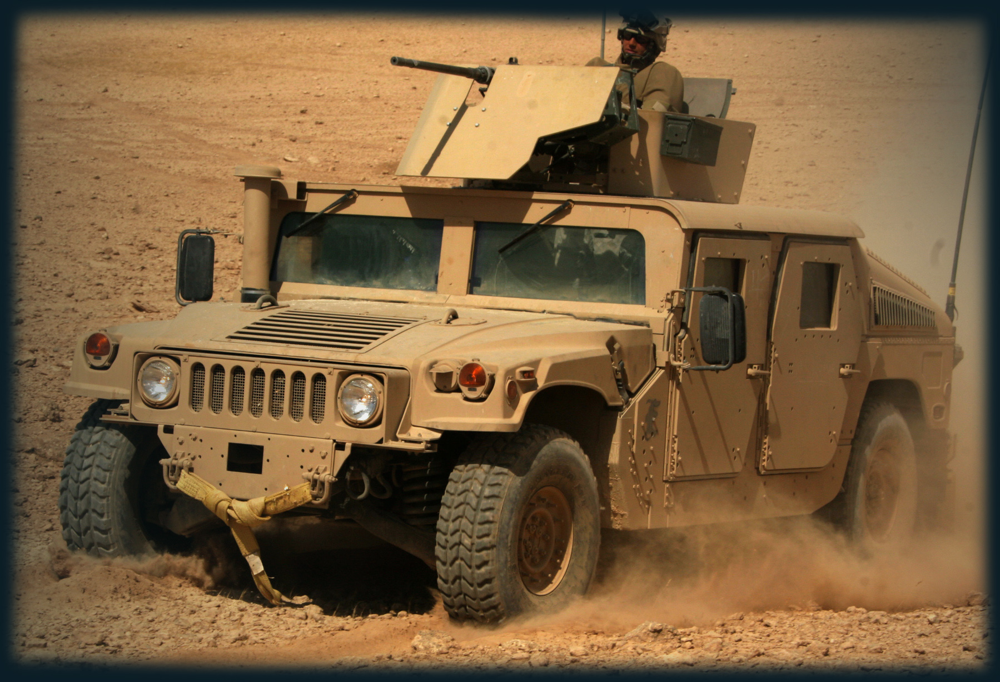

<section class="About">
    <div class="about__container">
        
        <div class="about__text" data-aos="fade-up" data-aos-duration="800">
            <h1 class="h1__colored">Про наші</h1>
            <h1>Досягнення</h1>
            <p>
                Про наші досягнення: З початку повномасштабного вторгнення допомагаємо Головному центру управління 
                в розрахунках витрати пального та побудови маршрутів для техніки, а також конфігуруванні нарядів. 
                За допомогою точно побудованих маршрутів вже вдалося зберегти 35 тон палива, сумарно зменшено 1650 
                мотогодин техніки , а також збільшена користь від одного маршруту в півтора рази.
            </p>
        </div>
    </div>
</section>